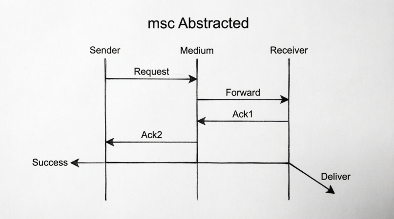
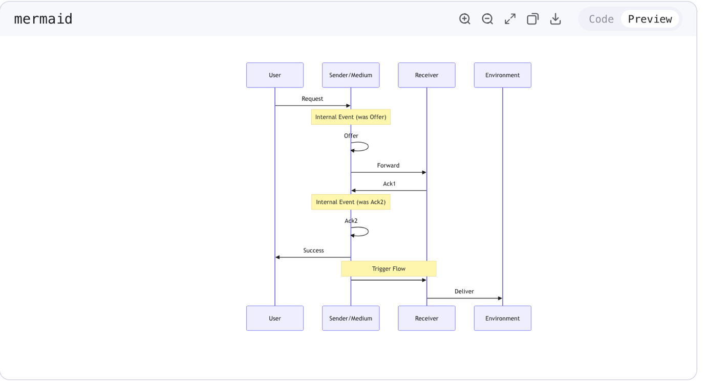
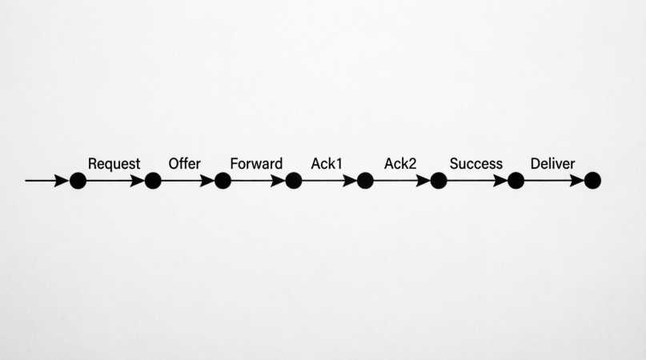

Experiments / QWen3.6-Plus-Thinking / Example 9.docx
Hi, please consider this picture from a Message Sequence Chart. Please identify the events in this diagram.

Answer:
1. **Request**: An incoming message from the external environment (left side) to the **Sender**. This initiates the sequence.
2. **Offer**: A message sent from the **Sender** to the **Medium**.
3. **Forward**: A message sent from the **Medium** to the **Receiver**.
4. **Ack1**: An acknowledgment message sent from the **Receiver** back to the **Medium**.
5. **Ack2**: An acknowledgment message sent from the **Medium** back to the **Sender**.
6. **Success**: An outgoing message from the **Sender** to the external environment (left side). This likely confirms the successful completion of the request to the original caller.
7. **Deliver**: An outgoing message from the **Receiver** to the external environment (right side).
* *Note:* The diagram shows a continuous horizontal line at the bottom originating from the **Sender**, passing through the **Medium**, reaching the **Receiver**, and finally bending down to become the **Deliver** arrow. This suggests a data flow or trigger that passes through all three entities before being delivered externally. The title "Weird" likely refers to this unusual continuous connection or the specific timing of events.
Question:
What is the correct ordering between sending Offer and sending Deliver?
Based on the standard interpretation of Message Sequence Charts (MSCs), where time flows from top to bottom:
**Sending "Offer" happens before sending "Deliver".**
Here is the breakdown:
1. **Offer:** This is the second event from the top. The Sender sends a message to the Medium.
2. **Deliver:** This is the very last event at the bottom of the chart. After all the internal handshakes (Forward, Ack1, Ack2) and the Success message, the final action is the Deliver message leaving the Receiver.
Question:
What is the correct ordering between sending Success and sending Deliver?
Answer:
Based on the visual layout of the Message Sequence Chart (where time progresses from top to bottom), here is the ordering:
**Sending "Success" happens before sending "Deliver".**
Here is the step-by-step breakdown:
1. **Vertical Position:** The event labeled **Success** is positioned higher up in the diagram than the event labeled **Deliver**. In MSCs, higher events occur earlier in time.
2. **Causal Flow:**
* At the bottom of the chart, there appears to be a horizontal flow originating from the **Sender**.
* The **Sender** sends the **Success** message (pointing left to the external environment) at the same time it initiates a signal/message to the right.
* This signal travels from the **Sender** to the **Medium**, and then to the **Receiver**.
* Finally, after the signal reaches the **Receiver**, the **Deliver** message is sent (pointing right to the external environment).
* Because the "Deliver" action is at the end of this chain reaction, it must happen after the "Success" action which is at the start of the chain.
Question:
Based on the diagram above, generate a message sequence chart in which message Offer is abstracted away. Please produce the resulting MSC after abstracting from Offer.
Answer:
Based on the provided Message Sequence Chart (MSC), abstracting away the message **Offer** means removing that specific event and its arrow from the diagram. In formal MSC terms, this usually implies that the message is considered internal or invisible, and the causal dependency it provided is either removed or assumed to be handled by the environment/abstraction layer.
Here is the resulting MSC description and a representation of the chart:
### Changes Made:
1. **Removed:** The message **Offer** (Sender $\rightarrow$ Medium).
2. **Effect:** The **Sender** now receives the **Request** and then waits (doing nothing visible) until it receives **Ack2**. The **Medium** now initiates the sequence by sending **Forward** (presumably triggered by the abstracted environment or the initial Request).
### Resulting Message Sequence Chart
**Chronological Order of Events:**
1. **Request**: External entity sends a request to the **Sender**.
2. **Forward**: The **Medium** sends a message to the **Receiver**. (Note: In the original, this was triggered by *Offer*. Now, it is the first visible action of the Medium).
3. **Ack1**: The **Receiver** sends an acknowledgment to the **Medium**.
4. **Ack2**: The **Medium** sends an acknowledgment to the **Sender**.
5. **Success**: The **Sender** sends a success message to the external entity (left).
6. **Data Flow/Trigger**: Simultaneously (or sequentially) after *Success*, a signal flows from **Sender** $\rightarrow$ **Medium** $\rightarrow$ **Receiver**.
7. **Deliver**: The **Receiver** sends the final delivery message to the external entity (right).
### Visual Representation (Text-Based Diagram)
```text
Sender Medium Receiver
| | |
|<-- Request | | (1. Request arrives)
| | |
| |--- Forward --->| (2. Medium forwards)
| | |
| |<-- Ack1 -------| (3. Receiver acks)
|<-- Ack2 ------| | (4. Medium acks Sender)
| | |
|-- Success | | (5. Sender reports success)
|-------------->|--------------->| (6. Signal flows S->M->R)
| | |
| | |-- Deliver --> (7. Receiver delivers)
| | |
```
### Mermaid Diagram Code
You can view this chart by pasting the code below into a Mermaid live editor:
```mermaid
sequenceDiagram
participant Sender
participant Medium
participant Receiver
Note over Sender: Request Received
Sender<-External: Request
Note over Medium: "Offer" is abstracted away
Medium->>Receiver: Forward
Receiver->>Medium: Ack1
Medium->>Sender: Ack2
Sender->>External: Success
Note over Sender,Receiver: Signal Flow
Sender->>Medium:
Medium->>Receiver:
Receiver->>External: Deliver
```
Please draw the image of the MSC.

Here is the Message Sequence Chart with the message **Offer** abstracted away.
The resulting diagram shows the **Sender** initiating the interaction (or receiving the request), but the internal **Offer** step is removed. The **Medium** now directly initiates the **Forward** message to the **Receiver**.
**Key features of the new diagram:**
* **Offer Removed:** The arrow between Sender and Medium labeled "Offer" is no longer present.
* **Forward:** Now the first internal message, sent from Medium to Receiver.
* **Acknowledgments:** `Ack1` and `Ack2` remain unchanged.
* **Success & Deliver:** The simultaneous flow at the bottom remains, where `Success` is sent to the left and `Deliver` is sent to the right.
Question:
Consider the original MSC given below. Merge instances Sender and Medium; produce the message sequence chart after merging. Please draw the resulting MSC.
Answer:
The user wants me to merge the `Sender` and `Medium` instances in the provided MSC.
**1. Analysis of the Original MSC ("msc Weird"):**
* **Instances:** `Sender`, `Medium`, `Receiver`.
* **Messages/Events:**
* `Request`: Input to `Sender`.
* `Offer`: Message from `Sender` to `Medium`.
* `Forward`: Message from `Medium` to `Receiver`.
* `Ack1`: Message from `Receiver` to `Medium`.
* `Ack2`: Message from `Medium` to `Sender`.
* `Success`: Output from `Sender` (to the left).
* Bottom Flow: A line originating from `Sender`, passing `Medium`, reaching `Receiver`, and ending with an arrow labeled `Deliver` pointing away from `Receiver`. This likely represents a data flow or trigger from `Sender` to `Receiver` which results in the `Deliver` action.
**2. Merging `Sender` and `Medium`:**
* **New Instance:** A single instance combining `Sender` and `Medium`. Let's call it `Sender/Medium`.
* **Internal Messages:** Messages that were between `Sender` and `Medium` (`Offer`, `Ack2`) become internal actions within the `Sender/Medium` instance. In an MSC, these are typically represented as self-loops or just events on the lifeline.
* **External Messages:**
* `Request`: Still inputs to the merged instance.
* `Forward`: Now originates from `Sender/Medium` and goes to `Receiver`.
* `Ack1`: Now goes from `Receiver` to `Sender/Medium`.
* `Success`: Still outputs from the merged instance.
* Bottom Flow: The flow from `Sender` (now part of `Sender/Medium`) to `Receiver` remains. The `Deliver` label is associated with the end of this flow at the `Receiver`. I will interpret this as a message `Deliver` sent from `Sender/Medium` to `Receiver`, or an unnamed trigger causing `Receiver` to output `Deliver`. Given the label placement, it's most likely a message named `Deliver` from the merged instance to the receiver, or the final action. Let's assume it's a message `Deliver` from `Sender/Medium` to `Receiver` for simplicity, or keep the structure: Merged sends trigger -> Receiver outputs Deliver. Looking at the "Abstracted" image in the prompt history, the line hits the Receiver and then goes to Deliver. So, `Sender/Medium` sends a signal to `Receiver`, and `Receiver` performs `Deliver`.
**3. Constructing the Resulting MSC:**
* **Lifelines:** `Sender/Medium` and `Receiver`.
* **Sequence:**
1. `Request` arrives at `Sender/Medium`.
2. `Offer` happens internally (Self-loop).
3. `Forward` is sent from `Sender/Medium` to `Receiver`.
4. `Ack1` is sent from `Receiver` to `Sender/Medium`.
5. `Ack2` happens internally (Self-loop).
6. `Success` is sent out from `Sender/Medium`.
7. A message/trigger is sent from `Sender/Medium` to `Receiver` (the bottom line).
8. `Deliver` is sent out from `Receiver`.
Let's refine the bottom part. In the original, the line is continuous. Merging Sender and Medium makes the start of the line and the middle part internal to the new instance. So the line effectively starts at `Sender/Medium` and goes to `Receiver`. Then `Deliver` happens.
**Visual Description:**
* Left Lifeline: `Sender/Medium`
* Right Lifeline: `Receiver`
* Arrow `Request` -> `Sender/Medium`
* Loop `Offer` on `Sender/Medium`
* Arrow `Forward` -> `Receiver`
* Arrow `Ack1` <- `Receiver`
* Loop `Ack2` on `Sender/Medium`
* Arrow `Success` <- `Sender/Medium` (pointing left)
* Arrow (unlabeled or implicit) -> `Receiver` (from `Sender/Medium`)
* Arrow `Deliver` <- `Receiver` (pointing right/down)
Actually, looking at the provided "Abstracted" image in the prompt, the bottom line is drawn from Sender, crossing Medium, hitting Receiver, and then `Deliver`.
If I merge Sender and Medium, the line starts at the merged lifeline, goes to Receiver, and then `Deliver`.
I will generate the MSC diagram.
**MSC Diagram Generation:**
* Title: msc Merged
* Participants: Sender/Medium, Receiver
* Messages:
* Request (to Sender/Medium)
* Offer (self)
* Forward (to Receiver)
* Ack1 (from Receiver)
* Ack2 (self)
* Success (from Sender/Medium)
* Deliver (to Receiver? or from Receiver?)
* Let's assume the bottom flow is: Sender/Medium sends a message to Receiver, which triggers Deliver. Or simply, Sender/Medium sends `Deliver` to Receiver. Given the label is at the end, I'll draw a message from Sender/Medium to Receiver labeled `Deliver`? No, the arrow points away.
* Let's stick to the visual: Sender/Medium sends a signal to Receiver. Receiver outputs `Deliver`.
Let's write the response.
The user wants the resulting MSC.
I will describe it and provide a Mermaid diagram.
One detail: `Offer` and `Ack2` are internal. I should probably include them as self-messages to be precise about the "merge" operation preserving behavior.
Final check on the bottom line:
Original: Sender -> (line) -> Medium -> (line) -> Receiver -> (arrow) Deliver.
Merged: Sender/Medium -> (line) -> Receiver -> (arrow) Deliver.
This implies a message from Sender/Medium to Receiver, followed by Deliver output.
I will draw an arrow from Sender/Medium to Receiver. And an arrow from Receiver labeled Deliver.
Wait, if I look at the "Abstracted" image, the line from Sender goes *through* Medium to Receiver.
So it's a message Sender -> Receiver.
In the merged version, it's Sender/Medium -> Receiver.
So I will draw a message from Sender/Medium to Receiver.
Does it have a label? The original has no label on the horizontal part.
I will leave it unlabeled or assume it's the trigger for Deliver.
Actually, I'll label the message from Sender/Medium to Receiver as `Deliver`? No, the label is at the end.
I'll draw the arrow from Sender/Medium to Receiver, and then the Deliver arrow.
Let's just produce the diagram.
One correction: The prompt asks to "Merge instances Sender and Medium".
This usually results in a single lifeline.
Messages between them become internal.
Messages to/from others are adjusted.
Resulting MSC:
- Lifeline 1: Sender/Medium
- Lifeline 2: Receiver
- Request -> Sender/Medium
- loop Offer (on Sender/Medium)
- Forward -> Receiver
- Ack1 <- Receiver
- loop Ack2 (on Sender/Medium)
- Success <- Sender/Medium
- (Unlabeled message) -> Receiver
- Deliver <- Receiver (Output)
Actually, looking at the very bottom of the original image, the line for `Success` and the line for the bottom flow start at the same point on the Sender lifeline.
So `Success` and the trigger for `Deliver` are concurrent outputs from the Sender.
In the merged chart, they are concurrent outputs from `Sender/Medium`.
One goes left (`Success`).
One goes right (to `Receiver`).
Then `Receiver` outputs `Deliver`.
This seems complete.
I will formulate the final output.
I'll create a text-based representation and a description.
The user asked to "draw", so I will provide a description and a mermaid code block which renders the chart.
One detail: `Offer` is abstracted away in the *previous* turn's image, but the current prompt says "Consider the original MSC given below. Merge instances Sender and Medium".
So I must start from the "msc Weird" image, not the "msc Abstracted" image.
So `Offer` and `Ack2` are present (as internal events).
Correct sequence:
1. Request
2. Offer (Internal)
3. Forward
4. Ack1
5. Ack2 (Internal)
6. Success & Trigger to Receiver
7. Deliver
Wait, in the original, `Offer` is before `Forward`.
`Ack2` is after `Ack1`.
Yes, this matches.
Let's double check the bottom line timing.
It is below `Ack2`.
So it happens last.
Correct.
Final plan for the Mermaid diagram:
- Participants: Sender/Medium, Receiver
- Request -> Sender/Medium
- Sender/Medium -> Sender/Medium: Offer
- Sender/Medium -> Receiver: Forward
- Receiver -> Sender/Medium: Ack1
- Sender/Medium -> Sender/Medium: Ack2
- Sender/Medium ->> Left: Success
- Sender/Medium -> Receiver: (Trigger)
- Receiver ->> Right: Deliver
I will combine the bottom trigger and Deliver into a logical flow.
Actually, the original shows a continuous line.
Maybe it's best to represent it as:
Sender/Medium -> Receiver: Deliver
And the arrow at the end is just the end of the message.
But the label `Deliver` is next to the arrow pointing away from Receiver.
This suggests `Deliver` is an action of the Receiver.
So:
Sender/Medium -> Receiver: (Signal)
Receiver ->> Right: Deliver
I'll go with this. It's the most accurate interpretation of the geometry.
One final check: The prompt says "produce the message sequence chart after merging".
I will provide the diagram.
One detail: `Success` arrow points left. `Deliver` arrow points right.
In Mermaid, I can use `participant` for the environment or just arrows to the side.
I'll use `participant ExternalLeft` and `participant ExternalRight` or just notes/arrows.
Actually, standard Mermaid sequence diagrams don't support arrows to "nowhere" easily without dummy participants.
I'll use dummy participants `User` and `Environment`.
Revised Mermaid:
participant User
participant SM as Sender/Medium
participant R as Receiver
participant Env as Environment
User->SM: Request
SM->SM: Offer
SM->R: Forward
R->SM: Ack1
SM->SM: Ack2
SM->User: Success
SM->R:
R->Env: Deliver
This looks good.
The unlabeled message SM->R corresponds to the horizontal line.
The `Deliver` corresponds to the final arrow.
Wait, is the bottom line one message `Deliver` from Sender to Receiver?
If so, the arrow should be at R.
In the original, the arrow is after R.
So my interpretation (Trigger -> Deliver) is better.
I will write the response now.
</think>
Based on the original MSC "msc Weird", merging the instances **Sender** and **Medium** results in a new combined instance (let's call it **Sender/Medium**).
Here is the step-by-step transformation:
1. **Lifelines:** The `Sender` and `Medium` lifelines are combined into a single lifeline. The `Receiver` lifeline remains separate.
2. **Internal Messages:** Messages that were exchanged between `Sender` and `Medium` (`Offer` and `Ack2`) become internal actions within the new `Sender/Medium` instance. These are typically represented as self-loops or events on the lifeline.
3. **External Messages:**
* `Request`: Now arrives at `Sender/Medium`.
* `Forward`: Now originates from `Sender/Medium` and goes to `Receiver`.
* `Ack1`: Now goes from `Receiver` to `Sender/Medium`.
* `Success`: Now originates from `Sender/Medium` and goes to the left (external).
* **Bottom Flow:** The continuous line at the bottom originally went from `Sender` through `Medium` to `Receiver`, ending with `Deliver`. In the merged chart, this becomes a signal/message from `Sender/Medium` to `Receiver`, which triggers the `Deliver` action/output from the `Receiver`.
**Resulting Message Sequence Chart:**
```mermaid
sequenceDiagram
participant User
participant SM as Sender/Medium
participant R as Receiver
participant Env as Environment
User->>SM: Request
Note over SM: Internal Event (was Offer)
SM->>SM: Offer
SM->>R: Forward
R->>SM: Ack1
Note over SM: Internal Event (was Ack2)
SM->>SM: Ack2
SM->>User: Success
Note over SM,R: Trigger Flow
SM->>R:
R->>Env: Deliver
```
**Visual Description of the Merged MSC:**
* **Left Lifeline:** `Sender/Medium`
* **Right Lifeline:** `Receiver`
* **Events (Top to Bottom):**
1. **Request**: Arrow from left (User) to `Sender/Medium`.
2. **Offer**: Self-loop on `Sender/Medium` (representing the internal message).
3. **Forward**: Arrow from `Sender/Medium` to `Receiver`.
4. **Ack1**: Arrow from `Receiver` to `Sender/Medium`.
5. **Ack2**: Self-loop on `Sender/Medium` (representing the internal message).
6. **Success**: Arrow from `Sender/Medium` to the left (User).
7. **Trigger**: An arrow from `Sender/Medium` to `Receiver` (representing the bottom flow).
8. **Deliver**: Arrow from `Receiver` to the right (Environment).

Question:
What is the order between sending Success and sending Deliver in the abstracted MSC?
Answer:
Based on the abstracted MSC (where the **Offer** message was removed), the ordering is:
**Sending "Success" happens BEFORE sending "Deliver"**
Looking at the diagram from top to bottom:
1. The **Success** message is sent from the Sender to the external environment (left side) after receiving Ack2
2. The **Deliver** message is sent from the Receiver to the external environment (right side) at the very end of the sequence
The horizontal line at the bottom shows a flow from Sender → Medium → Receiver, which then results in the Deliver message. This means Success occurs first, followed by the internal signaling, and finally Deliver.
Question:
Consider the original MSC given below. Please produce the set of all of its traces.
Answer:
Looking at this Message Sequence Chart, I need to identify all events and their causal dependencies to determine the set of all possible traces.
## Events in the MSC:
1. **Request** (external → Sender)
2. **Offer** (Sender → Medium)
3. **Forward** (Medium → Receiver)
4. **Ack1** (Receiver → Medium)
5. **Ack2** (Medium → Sender)
6. **Success** (Sender → external)
7. **Deliver** (Receiver → external)
## Causal Dependencies:
Following the message flows and lifeline ordering:
- Request → Offer (on Sender's lifeline)
- Offer → Forward (message causality)
- Forward → Ack1 (on Receiver's lifeline)
- Ack1 → Ack2 (message causality)
- Ack2 → Success (on Sender's lifeline)
- Success → Deliver (the horizontal line at bottom shows Success triggers the flow leading to Deliver)
## Set of All Traces:
Given the causal dependencies form a **total order** (a single chain), there is only **one valid linearization**:
**{ ⟨Request, Offer, Forward, Ack1, Ack2, Success, Deliver⟩ }**
This is the only trace because each event causally depends on the previous one, leaving no room for concurrent events or alternative orderings.
Question:
Please draw a labelled transition system that has the same traces as the MSC. Please produce one static picture, no interactive visualisation.
Answer:

Here is the Labelled Transition System (LTS) corresponding to the traces of the original MSC.
Since the MSC "Weird" represents a strictly sequential protocol (a single chain of events), the LTS is a linear path of states with transitions labelled by the messages exchanged.
**Description of the LTS:**
* **States:** The black circles represent the states of the system.
* **Transitions:** The arrows represent the events.
* **Labels:** The text above the arrows corresponds to the messages: **Request**, **Offer**, **Forward**, **Ack1**, **Ack2**, **Success**, and finally **Deliver**.
This linear structure reflects that there is only one possible trace (sequence of events) for this Message Sequence Chart.